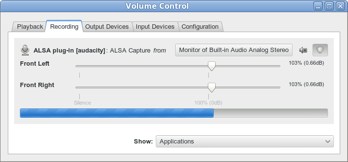
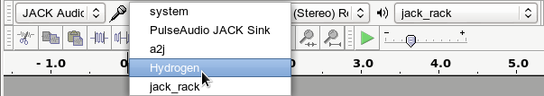

Tutorial - Recording Computer Playback on Linux
From Audacity Manual
| Copyright or website restrictions may prevent you recording or distributing material. Check first. |
PulseAudio
PulseAudio is a sound server providing professional audio features such as mixing and input/output routing. It is the default audio device on many Linux distributions including Ubuntu, Linux Mint, Open Suse and many Debian/Ubuntu-based distributions. PulseAudio operates as a proxy between sound applications and the audio hardware (usually via ALSA). PulseAudio Volume Control provides a "Monitor" device which listens for the audio output of other applications such as Firefox or Rhythmbox. Setting PulseAudio Volume Control to capture from the Monitor device lets Audacity record computer playback when its input device is set to pulse.
- If not already installed, add PulseAudio Volume Control (pavucontrol) to your system. This is usually available in the distribution's repository.
- Ensure that PulseAudio is running. In Audacity's Device Toolbar, set the Host to ALSA and the input device to pulse.
- On systems where PulseAudio is the default sound system the input device may be set to default.
- The output may be set to pulse or to any available soundcard.
- Ensure that "Software Playthrough" is not enabled in the Transport Menu then left-click on the Recording Meter to turn monitoring on.
- Open PulseAudio Volume Control and choose the "Recording" tab.
- In the "Capture from" dropdown, select the "Monitor" option of the playback device used by the application you want to record from, as shown below:
- 
- Launch the application that you wish to record and begin playback.
- In the "Recording" tab of PulseAudio Volume Control, drag the volume sliders so that the input level in Audacity's Recording Meter is to left of 0 dB (-6 dB is a good level to aim for).
- The playback level of the application being recorded will also affect the level of the recording. Use the "Playback" tab in PulseAudio Volume Control or the volume control in the application to adjust the output level.
- When the input level has been correctly adjusted, press the Record button in Audacity .
For a detailed description using Ubuntu 10, see Stereo Mix with Ubuntu 10 on the Audacity wiki.
JACK
Jack Audio System is commonly used in Linux distributions that specialise in media creation such as Ubuntu Studio and Studio 64.
To use Audacity with Jack it is useful or in some cases essential to have a few additional packages installed. This documentation assumes that you have Jack Audio System working on your machine. For help with setting up Jack, please consult the documentation for your Linux distribution.
Recording sounds playing from other applications is rather easy with Jack. Jack may be started using QjackCtl or from the command line. If Audacity is launched after Jack is started then "Jack Audio Connection Kit" will be an available host option in the Device Toolbar. If Jack is started after Audacity has been launched then it will be necessary to for new audio devices before jack is available to Audacity.
Any Jack compatible applications that are running before Audacity is launched will have their ports available in the Device Toolbar. To make an application available to Audacity that is launched after Audacity it is necessary to rescan audio devices again. After rescanning audio devices, input and output ports from other applications will be available in the Record and Playback settings of the Device Toolbar.
In this image the output of Hydrogen drum machine is being selected as the recording source. This will enable Audacity to record directly from the audio output from Hydrogen. If "System" is selected as the recording source then Audacity will record from the physical soundcard input.
- 
Applications that do not directly support Jack may also be used with Jack on a system that uses PulseAudio (such as Ubuntu and Debian based distributions) by installing "pulseaudio-module-jack". This provides the modules "Jack Source" and "Jack Sink" that allow PulseAudio to use Jack. For example, to record sounds playing through Firefox, PulseAudio Volume Control (pavucontrol) can be used to direct the output from Firefox to Jack Sink. The recording input for Audacity can then be set to record from "PulseAudio Jack Sink" and the sound will be recorded.
ALSA
Alsamixer
For systems that have ALSA but do not have PulseAudio or Jack Audio System, it may still be possible to record sounds playing on the computer. Alsamixer is a command line tool with "view" options to represent the sound device graphically. It is installed by default in most desktop distributions. To view the alsamixer manual, open a terminal window and enter man alsamixer or view the manual online.
To start alsamixer, type alsamixer in a terminal window. If a Mix device is shown as a capture device, set this as the active device to enable recording sounds that are playing on the computer.
OSS
OSS was the standard audio API in Linux up through the 2.4 series of official (kernel.org) Linux kernels. ALSA was added starting with 2.5, in those versions, Linux kernel authors marked OSS as deprecated.
Development of OSS was continued by 4Front Technology, initially as proprietary software but later released as partially open source. Possible solutions to recording audio playing on a computer using OSS are described here.
Other Methods
Alternative programs for recording computer playback
An alternative to recording streaming audio from the Internet is to download the data directly to disk, either by using command line tools such as streamripper or mplayer, or with a browser plugin (many available for Firefox), or writing the stream to disk from a media player such as VLC or xmms, or using a graphical down-loader such as streamtuner.
Using the ALSA PCM file
It is not necessary to use Audacity to record sounds playing on the computer. You can capture the sound from the application producing it before it reaches the sound device, which avoids capturing unwanted system sounds. This solution can be used even if there is no sound device. Note: this solution may not work on a system using PulseAudio but you can use PulseAudio Volume Control instead.
First you need to create (or if it already exists, add to the end of the file) ~/.asoundrc file. Do it with your favorite plain text editor. Note: ~ is your home directory so change that to /home/john or whatever if you are not working in a Linux shell.
pcm.teeraw {
type empty
slave.pcm "tee:default,'/tmp/out.raw',raw"
# 48000 S16_LE 2ch (aplay -t raw -f dat)
}
Now tell the application from which you are trying to record to use the "teeraw" ALSA device for playback - read the application's manual for help. Although there is no interface to do this for Adobe Flash, it can be achieved by setting the FLASH_ALSA_DEVICE environment variable to the name of the sound device to use, for example:
FLASH_ALSA_DEVICE=teeraw firefox
Thanks to wensley.org for this tip.
Run the application. Stop the application. Now /tmp/out.raw should contain your sound with perfect quality. If you change "default" to "null" in the above text, you will not hear anything but sound will still go to the file. If "empty" does not work with your ALSA library try with "copy".
If you want to record all sounds played through the computer, you'll need to set the teeraw device as your default device with something like:
pcm.!default{
type empty
slave.pcm "teeraw"
}
In this case though, you will need to change "tee:default,'/tmp/out.raw',raw" to "tee:null,'/tmp/out.raw',raw" or something else because otherwise you create a loop. In many cases changing "null" to "dmix" should do the trick - you record any application audio and still hear it through your speakers. Note that you'll pick up random sounds from other applications such as system "dings" and the raw file could get corrupted or overwritten. Unless your ALSA install allows you a setup like below you must absolutely make sure that only the desired application is producing sound while you are recording this way.
With newer ALSA versions you can try these parameters for convenience (also you can adapt to use a different encoder than lame):
pcm.teewav {
type copy
slave.pcm "tee:default,'/tmp/out.raw',wav"
}
pcm.teemp3 {
type file
format "raw"
slave.pcm "default"
file '|/usr/local/bin/lame -S -r -s %r --bitwidth %b -m j - /tmp/asound-$$.mp3'
}
Use a loopback cable
This is a simple and effective method of recording what is playing on the computer. It has the disadvantage that the audio signal is converted from digital to analog, then from analog to digital, instead of staying in the digital domain. This may result in some slight increase in noise and distortion.
Plug your line-out or headphones-out to the line-in using a cable with a stereo mini-plug at each end, then record from line-in. To hear the sound while recording, use a single to double stereo connector to give you a jack for the speakers or headphones.
If you have only mic-in and no line-in is selectable through alsamixer, you can build an attenuator to reduce the line level output to a level suitable for mic-in. But probably this will only provide mono recording, because mic-in is mono in most cases. As well, the quality may be questionable.